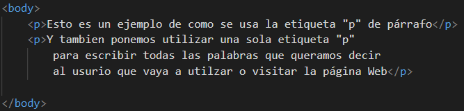

la etiqueta "p" :
Sirve para poner párrafos, oraciones o cualquier cosa que queramos decir en la página web
Su estructura es entre el mayor Que"<", la etiqueta "p", y el menor Que ">" y cierra con el mayor Que"<", la barra inclinada"/", la etiqueta "p",y el menor Que ">"
Esto es un ejemplo de como se usa la etiqueta "p" de párrafo
Y tambien ponemos utilizar una sola etiqueta "p" para escribir todas las palabras que queramos decir al usurio que vaya a utilzar o visitar la página Web
La etiqueta que se usa para hacer un salto de línea es el "br" entre el mayor Que"<" y el menor Que ">"
Esto es un ejemplo e salto de línea sin crear
otras etiqueta de párrafo para pasar de línea
entre las oraciones que queramos